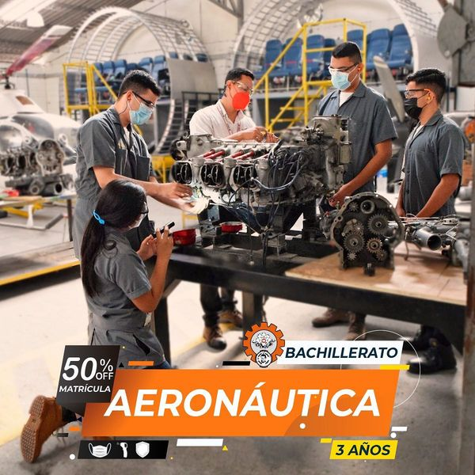
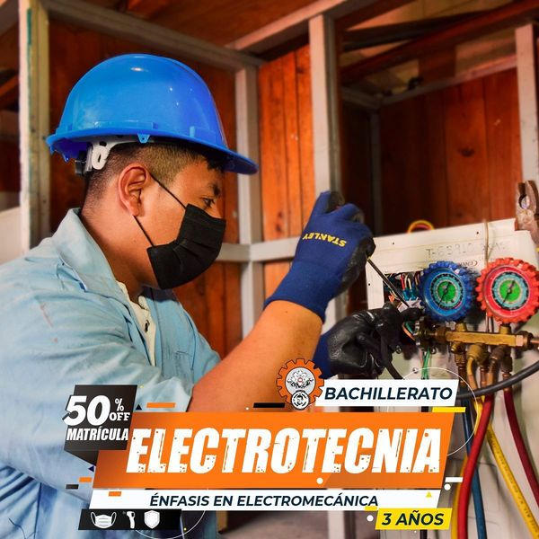
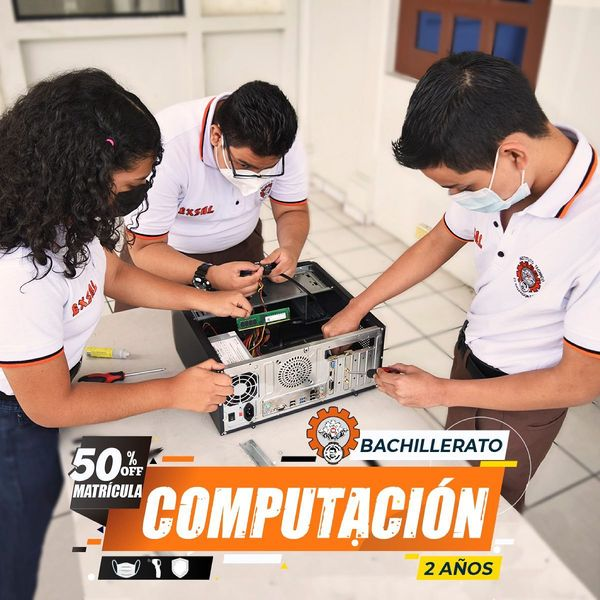

Automotriz
Formar Bachilleres tecnicos en mecanica automotriz capaces de realizar mantenimiento preventivo y correctivo a los sistemas mecanicos, electricos y electronicos que constituyen los automoviles y motocicletas, empleando correctamente herramientas y equipos especializados.

Aeronautica
Formar Bachilleres Tecnicos Bilingues competentes, aptos para certificarse como Tecnicos en Mantenimiento Aeronautico ante la Autoridad de Aviacion Civil

Electrotecnica
Formar bachilleres tecnicos electricistas certificados, competentes para la vida productiva, capaces de diseñar, calcular, montar maquinas y circuitos automatizados, aplicando las normas electricas y de seguridad industrial con criterios tecnicos y responsabilidad para dar soludion a problemas teoricos y practicos relacionados al area electrica.

Electronica
Formar bachilleres capaces de utilizar instrumentos y herramientas para diagnosticar y reparar equipos electronicos; diseñar circuitos electronicos de control domestico, comercial e industrial, utilizando software especializado en tecnologia electronica.

Salud
Formar bachilleres competentes en el area de la salud, con conocimientos sobre antropometria, inyectables y primeros auxilios, para fomentar la promocion, prevencion y humanismo como pilares importantes para desempeñar con calidad en cualquier rama de la salud.

Computacion
Formar bachilleres enfocados al diseño, desarrollo e implementacion de sistemas informaticos; en los ambitos de hardware, software y redes informaticas, logrando adapta las nuevas tecnologias que demandas las instituciones publicas y privadas de enfoque humano, etico, emprendedor y con responsabilidad social
